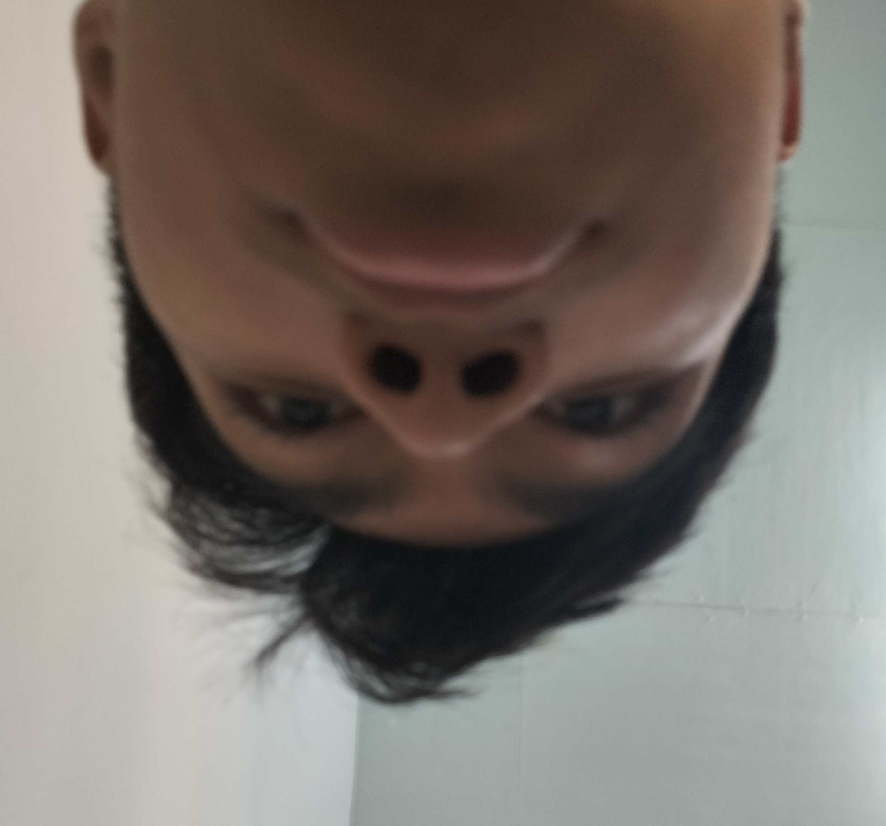
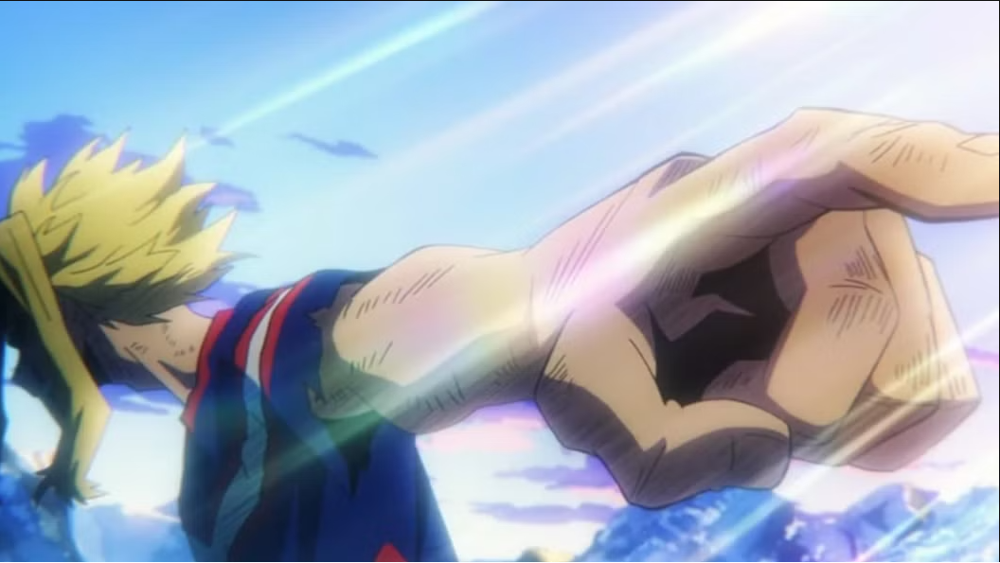

| Nama Akuh | : Kefiar Sakki Widyarinakit |
| NIM Akuh | : 25390100003 |
| Jurusan Akuh | : D3 Sistem Informasi |
| Alamat Akuh | : Kab. Mojokerto |
| Hobi Akuh | : turu |
| Tentang Akuh | : |
Warnet bukan sekadar tempat bermain game. Di sinilah para pejuang digital berkumpul, menyalakan PC, memasang headset, dan mempertaruhkan harga diri di balik layar. Di tempat ini, koneksi adalah kehidupan, FPS adalah harga diri, dan satu kemenangan bisa menjadi alasan untuk pulang dengan senyuman. Selamat datang di warnet. Tempat di mana waktu berlalu, saldo berkurang, dan “satu match lagi” tidak pernah benar-benar satu.

My Hero Academia adalah anime yang berlatar di dunia tempat hampir semua orang memiliki kekuatan super yang disebut Quirk. Ceritanya berfokus pada Izuku Midoriya atau Deku, seorang anak yang awalnya tidak memiliki Quirk tetapi bercita-cita menjadi pahlawan seperti idolanya, All Might. Setelah bertemu All Might, Deku mewarisi kekuatan One For All dan kemudian masuk ke U.A. High School untuk belajar menjadi pahlawan.
Seiring berjalannya cerita dari season 1 hingga akhir, Deku dan teman-temannya menghadapi berbagai ujian, villain berbahaya, serta konflik besar antara para hero dan League of Villains. Pertarungan semakin serius hingga terjadi perang besar yang mengungkap berbagai rahasia tentang One For All, All For One, dan Shigaraki. Pada bagian akhir, Deku bersama para hero dan teman-temannya menghadapi pertarungan terakhir demi menghentikan All For One dan Shigaraki serta menyelamatkan masyarakat.
Secara keseluruhan, My Hero Academia menceritakan perjalanan Deku dari seorang anak tanpa kekuatan menjadi pahlawan sejati, sekaligus menunjukkan bahwa menjadi pahlawan bukan hanya tentang memiliki kekuatan, tetapi juga tentang keberanian, pengorbanan, dan keinginan untuk menyelamatkan orang lain.